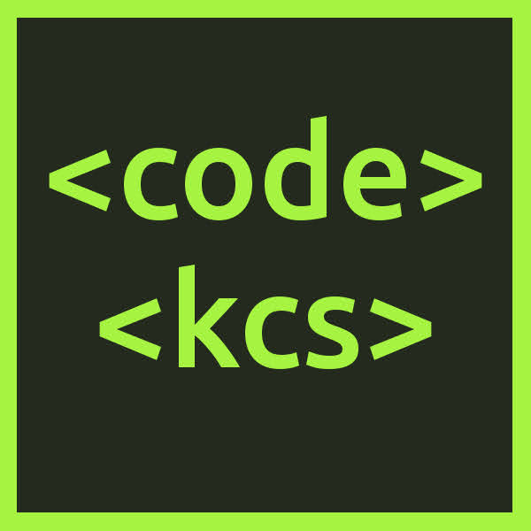
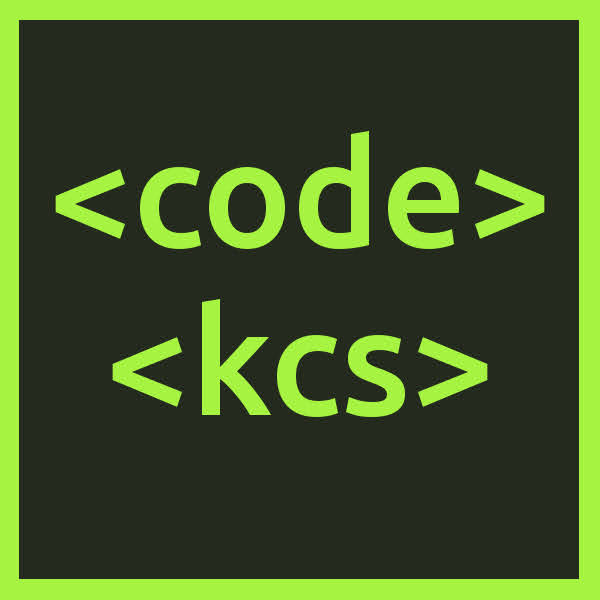

CodeKCS
HTML/CSS, JS, jQuery, Github Student Developer Pack, Scratch, RobotC
Taught coding classes at my high school as part of my Senior Project, and continued to design coding curriculum afterward. Taught four weeks of coding classes (six classes total) to the Sophomore engineering class, which gave me just enough time to introduce the students to the joys of creative programming.
Video was filmed, edited, and produced by Christine Davis for Akaku Project YBeam in 2018
Overview
I taught coding classes at my high school as part of my Senior Project, and then continued to design coding curriculum afterward. This project involved teaching four weeks of coding classes (six classes total) to the Sophomore engineering class. Outside of the class, I tried to increase code literacy at my school by creating a KCS Code Club, as well as designing and distributing a “KCS Code Zine” publication that focused on Creative Programming. I designed and printed lots of qr code stickers linking to the CodeKCS website and put them in the front office for people to take and scan. I also designed fliers to advertise the Code Club, and built and designed the CodeKCS website from scratch with HTML/CSS/JS to showcase learning resources.
Teaching: Class Curriculum
I taught three class periods a day every Friday for three weeks. For the fourth week, I taught three class periods a day on Monday, Wednesday, and Friday. Each class period had about 20 students, so I taught about 60 students total. From the beginning, I wanted to emphasize learning-by-doing and project-based learning. I also wanted to be respectful of the students’ time and commitments to other classes. Although I was required to issue grades, I tried to keep a very lenient grading scale that was mainly based on in-class participation and whether they submitted their assignments. My personal belief is that it is impossible to fairly grade “creativity” and exploration of new, unfamiliar topics, therefore, all I was interested in grading was participation, or whether the students showed up (frankly, I’d argue that this is all that matters, since everyone will naturally learn and apply what they learned at a different pace). I should reiterate that the purpose of this course was not to teach “computer science” or prepare the students to study software development at the college level, rather, I wanted them to learn about Creative Programming as a possible avenue for self expression.
Week 1 (Friday): Scratch
Week 1 was meant to introduce students to programming through Scratch, the block-based programming environment created by MIT. Scratch is a great platform for learning the basic building blocks of programming, by allowing students to make their own games and animations. In fact, my own programming journey started with Scratch when I was about nine years old - so teaching other kids how to think programmatically via Scratch was a bit of a full-circle moment for me. This platform was also a good way of introducing Creative Programming - showing that you can use code to make something creative, fun, and as a form of self-expression, which is what I tried to encourage with that week’s assignment.
I intentionally made the Scratch assignment very open-ended, for multiple reasons. I wanted to encourage the students’ creativity by providing as few restrictions as possible: I did not want to tell them to make a specific kind of game or animation, rather, I wanted them to make whatever they wanted. Anything that reflected their own interests or hobbies, as well as honoring their own personal time constraints - since my aim for this course was for it to be explorative and fun, rather than having rigid coursework or a long list of strict, time-consuming objectives. Especially for Week 1, the main learning objectives that I wanted the students to start to understand were just two things: 1) The concept of loops and actions that repeat themselves, and more importantly, 2) User input causing something to happen in the program - i.e. the user and the program being able to interact with each other on some level.

Scratch Assignment
You can see some of the students’ Scratch projects in the CodeKCS Scratch Studio (not all students chose to share their projects there, opting to send the projects via email instead). One of the neat things about many of these projects is that, knowing the students personally, I could see that a lot of the projects reflected their own interests and hobbies - from sports to pop culture and memes. I was quite excited to see and play the final programs!
Week 2 (Friday): HTML + Git
Web development has been a form of self expression for me for many years, therefore, I wanted to introduce the students to building things for the web. I figured that there were also practical applications of this in their person lives - such as being able to customize their Tumblr blogs or build their own personal websites. I knew from the get-go that there would be a lot of content that I wouldn’t be able to go over, since this is such a broad topic for such a short timeline. However, I still wanted the students to be able to deploy some sort of static site to the internet via Github Pages.
Figuring out a way to teach web development without being allowed to install anything on the school computers was an interesting challenge. I opted to use a service called Code Anywhere, which is an online code editor, IDE, and included its own terminal that could be used with git. I had the students use their school accounts to sign up for Code Anywhere, and I encouraged them to use their school accounts to claim the Github Student Developer Pack, which is an invaluable resource for students interested in learning web development and design.
A good part of the class time in Week 2 was dedicated not just to explaining how HTML (HyperText Markup Language) web pages work and are served, it was also dedicated to setting up github repositories and teaching some basic git commands so that the students had these valuable tools in their toolbelt. I taught the students how to hide their email from command line pushes as well, since I consider this to be an important privacy feature. Overall, this week involved lots of setup, creating accounts on various services using their school email accounts, and connecting and configuring Code Anywhere with their newly created Github accounts, etc. By the end of each class period, we were able to create a basic index.html page for each students’ github pages website - published at <student’s_username>.github.io.
Week 3 (Friday): HTML/CSS + Git
During Week 3, we continued working on the students’ github pages websites. The websites were originally supposed to be portfolio websites that featured some of their work from the class as well as other classes, however, the timeframe was a little too short to teach the students how to make a full-fledged website with navigation, multiple pages, and other features. I really wanted to introduce the students to Javascript as well, however, I decided that I would rather have a slower pace, with me walking around helping the students with any HTML, CSS, or Git issues, than overwhelming them by throwing in the Javascript - since we only had one class period at this point. However, a few students were able to integrate some Javascript into their websites, and I was happy to help them with that one-on-one. Therefore, the overall focus this week was teaching some basic html elements - headings, paragraphs, images, and buttons, and then teaching them how to connect those elements to a stylesheet for nicer formatting. The students were able to personalize their github pages websites, and I was quite pleased with the results because, although this was a very basic introduction to web development, I found that the students were still able to be creative with it and have fun - adding lots of images, text, buttons, colours, and other formatting that expressed their interests, humour, and personal style. Overall, I am glad that I kept the content simple, because I think it allowed the students to have more fun rather than feeling overwhelmed. Thus is the entire point of creative programming.
Web Development slides used for Weeks 2 and 3.
Week 4 (Monday, Wednesday, Friday): RobotC
The final week’s focus was mainly RobotC, to help prepare the students for their next unit in the engineering class, which was VEX robotics. RobotC is a C-based language that uses a block-based environment similar to Scratch, and we were able to utilize the VEX “virtual robot” environment to test out the students’ programs - the students were able to control a robot in a virtual world using their code. They were able to make the virtual robot move around, maneuver around virtual obstacle courses, and even get the robot arms to move up and down. We also were able to load some programs onto one of the real-world example robots in the engineering lab. On Friday, the students were allowed to choose between playing with Scratch, HTML/CSS, or RobotC.
RobotC Virtual Robot demonstration in class. In addition to playing with the virtual robot environment on the school computers, students could send me their RobotC code and I would play it on the TV screen for the rest of the class to see.
Website Design & Development Process
An important part of this project, in addition to the curriculum, was designing and developing the CodeKCS website. The website not only provides information about the project, but it includes more resources for learning about programming, resources that I made for the program, and PDF versions of all of my curriculum - as well as some of my previous curriculum ideas that I would like to see applied in the real world, but didn’t have an appropriate timeline for given the short duration of the class.
CodeKCS Homepage

GIF animation of CodeKCS Website
KCS Code Zine landing page
Lessons page, before deciding to go in a different direction with the course setup.
Journey page design in SketchApp, before deciding to go in a different direction.

Lessons page assets, designed in SketchApp (aka Sketch).
KCS Code Zine
Printed copies of the KCS Code Zine, with 3D printed zine holder.
Read the KCS Code Zine on Issuu!
Binary Abacus
The original plan was to give away an 8-bit “binary abacus” as a freebie within the KCS Code Zine - it would have been in a separate envelope attached to the back of the zine, as a 3D-printed kit, with its own separate instruction sheet and a binary code alphabet table. The idea was that the abacus doubled as both a fidget toy and a way of better understanding how binary works - the students could use the abacus to code for single letters of the alphabet by setting each column to 0 or 1 (down or up, off or on).
Completed binary abacus kit.
Although I managed to 3D print enough kits and cut enough wires for the beads, I never ended up including the binary abacus in the final Code Zines. This is partly because I spent too much time trying to iterate on and refine the model (such as trying to include 3D-printed poles for the beads instead), and I ended up deciding that, time-wise, it would be better just to print and publish the zines as-is. I didn’t want to include the kit without well-written instructions, explanations, and learning objectives - so I just decided to omit it from the publication.
Stickers & Code Club Flier


 



Senior Project Presentation

Presenting my Senior Project in 2018